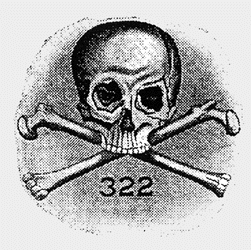

|
Skull and Bonesaka The Order Depending on whom you talk to, there are anywhere from one to several thousand "secret" organizations with a "secret" agenda to rule the world via a vast conspiracy. The vast majority of these claims would appear, on the face of it, to have as much credence as the notion that the world is flat. But then, some people still believe that.However, the fact that there are a lot of stupid people out there believing stupid things doesn't necessarily mean that all such claims are untrue. After all, even quite sane people can harbor serious doubts about the lone gunman theory in the Kennedy Assassinations. Watergate appeared to be ridiculous at first glance. The existence of American Concentration Camps is well-documented. Fluoridation is a legitimate topic of scientific debate. The CIA really did dose unsuspecting civilians with LSD as part of their Mind Control program. And the U.S. military really conducted radioactive experiments on civilian medical patients as part of the Atomic Bomb program.
Which leads us to our real topic for today: What the FUCK is the deal with Skull and Bones? While there are centuries worth of rumors to sift through concerning Freemasonry, the Illuminati, the Knights Templar, etc., etc., Skull and Bones is a relatively young organization that only achieved national prominence with the rise of George HW Bush. According to the official story, Skull and Bones was founded on the campus of Yale University in 1832. Skull and Bones was a direct offshoot of a German craze for conspiratorial muck that same year, a social phenomenon which would directly lead to the rise of such groups as the Ordo Templi Orientis and the Golden Dawn, groups which apparently drew on existing Masonic traditions to create a worldview in which ritual magic and deep confusion were considered paths to enlightenment and power. As a student's secret society at Yale, Skull and Bones had access to a pool of great, if impressionable, intellects over the years (as well as a few doofuses who enjoyed fortunate family connections). The known and alleged list of Bonesmen includes (but is not limited to):
As is probably apparent, the list is a lot less impressive than a list of Masonic initiates, just for instance, which includes George Washington, Gen. Douglas McArthur, Teddy Roosevelt, Winston Churchill, Mark Twain, Duke Ellington, J. Edgar Hoover, Benjamin Franklin and Honus Wagner, whose face adorns the world's most valuable baseball card. On the one hand, the lack of truly distinguished personae on the Skull and Bones roster kind of detracts from the paranoia-fueled fear that this conspiracy might end up ruling the world. On the other hand, it's a lot easier to swallow the claim that these underachievers would get caught up in the sort of clunky "mind control cult lite" offered up by Skull and Bones. Certainly, the fact that the Bush dynasty is again running the country begs for some sort of ulterior explanation. And when push comes to shove, of course, being U.S. president is pretty much like ruling the world, at least in the minds of many recent Oval Office occupants. Even a president whose intellectual acumen is the subject of late-night TV comedy monologues is still an amazingly powerful guy. Super-hot-babe journalist Alexandra Robbins wrote a book on Skull and Bones in which she delved into the group's kinky secrets, just like in the movies! She described the group's initiation ritual to CBS News thusly:
There is a devil, a Don Quixote and a Pope who has one foot sheathed in a white monogrammed slipper resting on a stone skull. The initiates are led into the room one at a time. And once an initiate is inside, the Bonesmen shriek at him. Finally, the Bonesman is shoved to his knees in front of Don Quixote as the shrieking crowd falls silent. And Don Quixote lifts his sword and taps the Bonesman on his left shoulder and says, 'By order of our order, I dub thee knight of Euloga.'According to Robbins, the Bonesmen take on secret and occultish names such as Magog and Boaz. Robbins claims Magog was the name traditionally given to the member with the most sexual experience, such as (incredibly) Bush Sr. In a telling anecdote related for the Atlantic Monthly, Robbins wrote:
George W. was not assigned a name but invited to choose one. According to one report, nothing came to mind, so he was given the name Temporary, which, it is said, he never bothered to replace; Temporary is how Bush's fellow Bonesmen know him today.Sigh... Bonesmen are selected according to top secret criteria, or who their parents are. As Yale undergraduates, they are first introduced to the group via "the tap," in which a Bonesman walks up behind the student and taps him on the shoulder, asking "Skull and Bones, accept or reject?" The correct answer is "accept." From there, the new recruit is whisked off for a series of initiations and rituals which involve such intellectually rich endeavors as describing your entire sexual history in detail, masturbating in tombs and swearing to keep your mouth shut about having done all this dumb shit. The latter principle is endlessly reinforced with mind games such as showing new recruits a staged "murder" and ordering them to keep their silence. (Some of these rituals may have been modified with the group's very recent decision, under heavy pressure, to admit women, gays and people of color.)
Despite the juvenile nature of all this shit, it's not a small thing to be a Bonesman. George W. Bush had much of his so-called business career underwritten by his extremely wealthy Bonesmen colleagues, and he made a lot of money despite the the fact his companies had a tendency to collapse. On the other hand, the secret society doesn't seem to be doing John Kerry a lot of good. From the conspiracy lover's point of view, about the only upside to Skull and Bones is that it's indisputably real. But it's not a good reflection on a top-secret cabal when there is ample and even copious evidence demonstrating its existence and describing its most intimate rituals. Still, if the Bonesmen make for a piss-poor world-dominating conspiracy, the club would at least make a great movie, right? Well, no. Consider rotundly insightful film critic Robert Ebert's take on "The Skulls," a 2000 movie directly based on the group's lore:
I would give a great deal to be able to see "The Skulls" on opening night in New Haven, Conn., in a movie theater full of Yale students, with gales of laughter rolling at the screen. It isn't a comedy, but that won't stop anyone. (...) It's so ludicrous in so many different ways it achieves a kind of forlorn grandeur. It's in a category by itself.Ludicrous? Forlorn grandeur? Sounds like the filmmakers got it just about right...
Timeline
|
 So when the conspiratorial mind turns to secret societies, each claim deserves a reasonable examination with an open mind.
So when the conspiratorial mind turns to secret societies, each claim deserves a reasonable examination with an open mind.  The name "Skull and Bones" came from a claim that the group had the skull of Geronimo in its secret crypt headquarters. After a vigorous protest by Native Americans, the Bonesmen coughed up a skull which turned out not to be Geronimo. Needless to say, this didn't really satisfy anyone, but it was eventually dropped. It's entirely unclear why a club of privileged white males who want to rule the world would even WANT to have the skull of Geronimo in its possession, but I guess that's why they call it a "secret" society.
The name "Skull and Bones" came from a claim that the group had the skull of Geronimo in its secret crypt headquarters. After a vigorous protest by Native Americans, the Bonesmen coughed up a skull which turned out not to be Geronimo. Needless to say, this didn't really satisfy anyone, but it was eventually dropped. It's entirely unclear why a club of privileged white males who want to rule the world would even WANT to have the skull of Geronimo in its possession, but I guess that's why they call it a "secret" society.